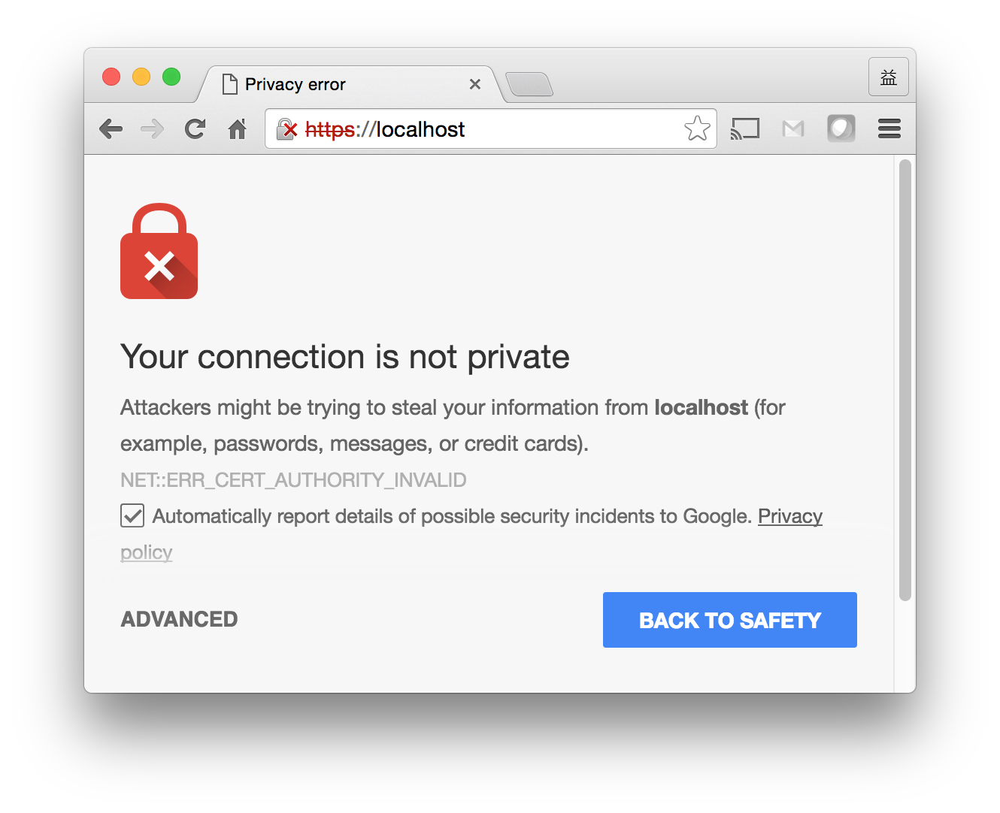

生成RSA秘钥对
以下OpenSSL的genrsagenrsa命令生成一个2048 bit的公钥私
钥对，输出到文件server.key里gist：
|
server.key是PEM格式pem的：
|
虽说文件头尾都标注着RSA PRIVATE KEY，但实际上这个文件里既包括公钥也
包括私钥genrsa。
生成身份证申请
以下OpenSSL的req命令req以上文中的 server.key 为输
入，生成一个身份证申请（CSR）文件 server.csr。
|
这个 CSR 里的公钥是从 server.key 里提取出来的，域名是 localhost。
需要注意的是，如果将来我们启动一个 HTTPS 服务，使用这个 CSR 签署的身份
证，那么客户端必须可以通过域名 locahost 访问到这个 HTTPS 服务。
server.csr文件也是PEM格式的，文件头尾标注为 CERTIFICATE REQUEST:
|
签署身份证
以下OpenSSL的x509命令x509用指定的私钥 server.key
签署 server.csr，输出身份证 server.crt：
|
server.crt也是PEM格式的。文件头尾的标记为CERTIFICATE:
|
在这个例子里，用来签署CSR的私钥和 CSR 里的公钥是一对儿。也就是说这是一
个自签名（self-sign）的例子。
通常情况下，我们会用一个CA的私钥来签署一个CSR。在这个为 Kubernetes
apiserver 签署身份证的例子sign里，apiserver 的身份
证是用一个自签署的CA的私钥来签署的：
|
这个例子里，ca-key.pem是Kubernetes管理员自己创建的CA的私钥（其实是密
钥对）。第二个命令（openssl req -x509 ...）不经过生成CSR的过程，直接
输出CA的身份证。注意CA的域名是 kube-ca。
接下来三个命令分别创建 apiserver 的私钥，生成 apiserver 的CSR，以及用
CA 的private key（ca-key.pem）来签署 apiserver 的身份证。
注意，签署 apiserver.csr 得到 apiserver 的身份证（apiserver.pem）
的过程中，不仅需要 ca-key.pem，还需要CA的身份证 ca.pem，因为apiserver.pem 里附上了 CA 的身份证。从而构成一个信任链。
HTTPS Server
现在我们有了 server.key 和 server.crt。我们可以写一个HTTPS服务程序，
它私藏 server.key，同时在与任何客户端程序首轮通信的时候通告自己的身
份证 server.crt。这里有几点需要注意：
为了确保“私藏”一个文件，我们需要设置其文件系统访问权限为只有owner可
读sign：chmod 400 server.key如果我们用Go语言来写这个 HTTPS server，只需要在调用
http.ListenAndServeTLS()函数的时候，把server.key和server.crt的文件路径传递给它即可。整个程序源码如下：package mainimport ("io""log""net/http")func main() {http.HandleFunc("/", func(w http.ResponseWriter, req *http.Request) {io.WriteString(w, "hello, world!\n")})if e := http.ListenAndServeTLS(":443", "server.crt", "server.key", nil); e != nil {log.Fatal("ListenAndServe: ", e)}}因为我们在前面这一步生成 server.csr 的时
候，指定的域名是 localhost，所以必须确保 HTTPS 程序监听localhost
虚拟网卡上的端口 443。上面程序里指定的监听地址是"443"，只有端口没
有标识网卡的IP地址或者域名，那么ListenAndServerTLS会让程序监听
本机所有网卡上的 443 端口。sudo go run server.go &同样的原因，客户端必须通过
localhost访问我们的 HTTPS 服务。在这
个例子里，localhost域名意味着只有本机上执行的客户端才能访问。
访问TLS服务
用浏览器
我们可以通过浏览器访问我们的 HTTPS server。但是因为server的身份证是我
们自签署的，浏览器里没有CA的身份证其中的公钥
可以验证 server.crt，所以浏览器会提示说它不信任我们的HTTPS服务。但是
如果用户表示信任，还是可以访问的。

要想消除浏览器的提示，最简单的办法就是把我们为HTTPS服务自签署的身份证
加入到浏览器里chrome。
实际上，很多公司的运维团队都会生自命为本公司内部的CA，成一个自签署的身
份证，加入到公司配发的电脑的操作系统或者浏览器里。而本公司内部的很多网
路服务（报销系统、人事管理系统、考评系统、各种计算资源上的SSH服务）都
用这个内部CA来签署。这样用公司的电脑，即可访问这些服务。
用curl
类似的，我们可以通过加 -k 参数让 curl 信任我们的HTTPS 服务器：
|
或者我们可以把我们自签署的身份证告诉 curl，让它用这个身份证验证我们的
HTTPS 服务：
|
如果手边没有 server.crt，我们甚至可以用 openssl
工具找我们的 HTTPS server 要一份：
|
请注意，Mac OS X 自带的 openssl 版本太低，不支持 Go 语言 http
package 里实现的高级加密算法，所以我们得用 Homebrew 安装新版本：
|
下一步
从上面操作可以看出来，TLS的具体操作和 OpenSSL 息息相关。关于OpenSSL的
更多用法，可以参见esse。
当我们用 OpenSSL 创建了CA身份证并且用CA身份证给相关程序签署了各自的身
份证之后，我们就可以开工写作和调试这些程序了。在下一篇
里，我们介绍如何用Go语言写HTTPS的server和client。
参考文献
genrsa https://www.openssl.org/docs/manmaster/apps/genrsa.html
pem https://www.namecheap.com/support/knowledgebase/article.aspx/9474/69/how-do-i-create-a-pem-file-from-the-certificates-i-received-from-you
sign https://coreos.com/kubernetes/docs/latest/openssl.html#kubernetes-api-server-keypair
perm http://stackoverflow.com/questions/9270734/ssh-permissions-are-too-open-error
chrome http://www.robpeck.com/2010/10/google-chrome-mac-os-x-and-self-signed-ssl-certificates/#.V4pvTJMrJhj
esse https://www.digitalocean.com/community/tutorials/openssl-essentials-working-with-ssl-certificates-private-keys-and-csrs